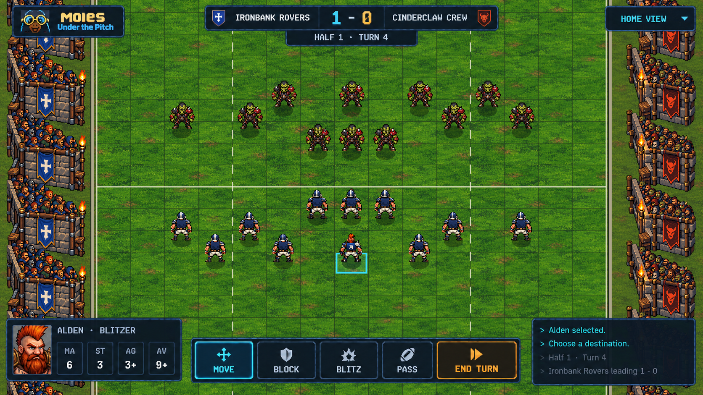
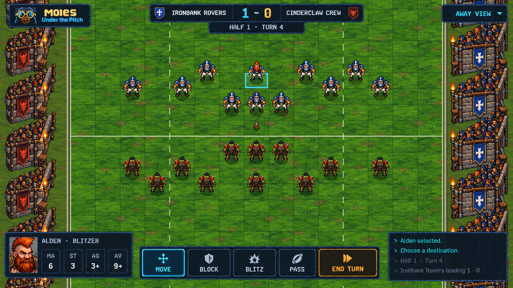
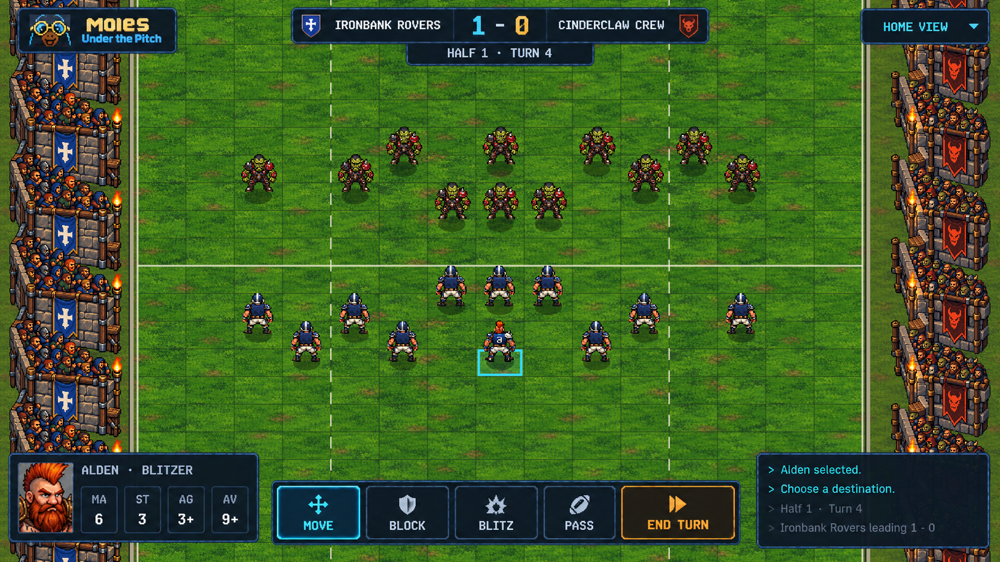
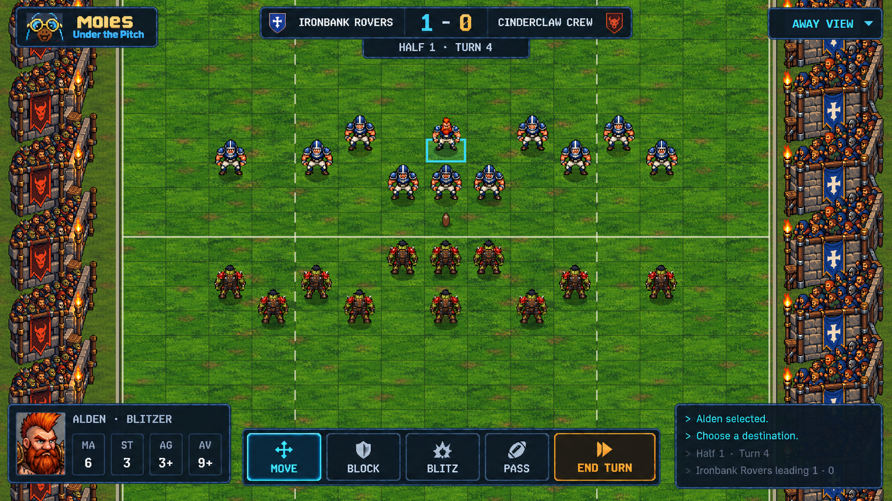
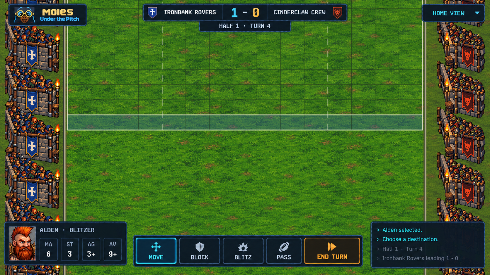
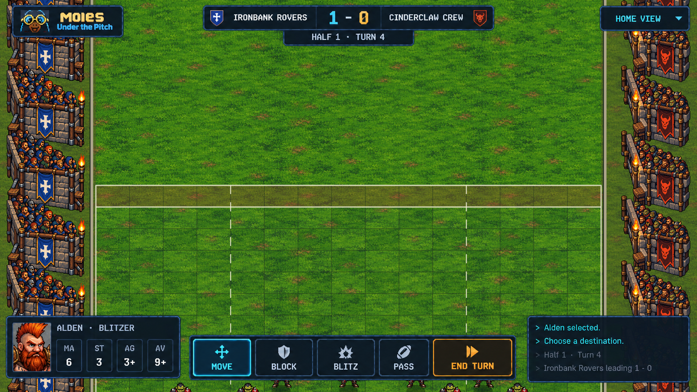

MUTP · lower parallel pitch
This interpretation is superseded by the travelling perspective study, which restores the original stadium and aligns parallel world edges to a common screen vanishing point.
Lower end-on views with parallel touchlines and stadium rails. The complete world scrolls together: turf, pitch, markings, players, sidelines, crowd stands, banners and torches. The approved HUD stays fixed.
Each view retains the same exact 26 × 15 pitch: 390 squares, end zones, 4 / 7 / 4 divisions, and 22 players with centered feet.
40° elevation · zero yaw · orthographic


Home coach



Away coach

35° elevation · lower comparison


Home coach



Away coach

The entire pitch moves
These 40° home-view captures show the near and far ends. Use the live viewer to follow a grass patch, torch or banner as it moves with the squares. The HUD remains in the same screen position.


Near end · canonical x=0

